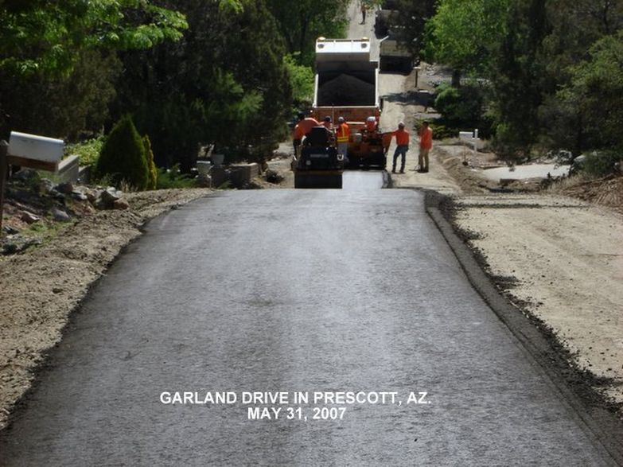
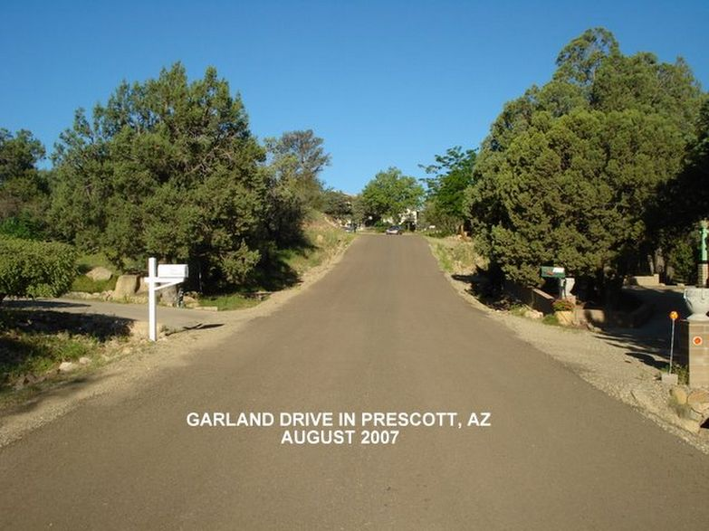

Garland Drive, dated in the photographs
The Prescott program is the oldest documented application: a residential street built from treated native material and finished with chip seal, with the timeline printed on the photographs themselves, rolling on May 31, 2007; cured surface in August 2007; chip-sealed September 2007. The program grew to include golf trails and walking paths. The same street was revisited in 2018 and again in 2026, still in service, through nineteen mountain winters, including a verified low of 1°F on January 1, 2011, and verified summer air highs of 105°F (June 20, 2016), both from NOAA daily records at Prescott Love Field: the freeze-thaw-and-heat cycle that breaks conventional bases. At those air temperatures, published measurements put dark pavement surfaces 40–60°F hotter in direct sun (154–172°F measured in Arizona studies), consistent with the 140°F+ ground temperatures cited in the product record. The manufacturer confirms this is the earliest substantive application: prior groups' efforts before 2007 "never did anything of substance."

